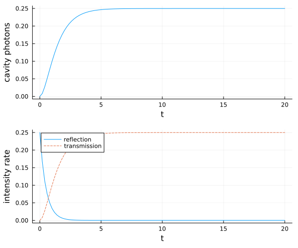
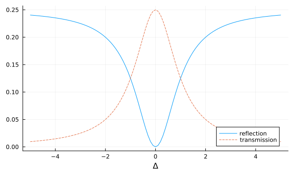
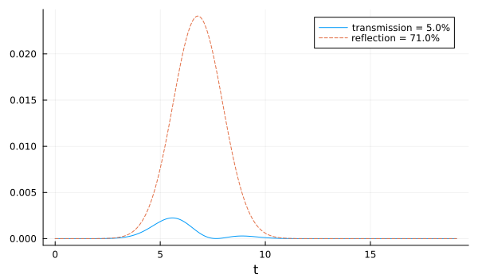

Two-sided Cavity with Atoms
In this example, we first simulate a continuously coherently driven empty two-sided cavity where we see the transmission and reflection spectrum. Afterwards, we couple $N=2$ two-level system resonantly to the cavity to investigate the transmission and reflection of a weak coherent pulse.
As usual, we start by loading the packages and specifying the system. We already include the Hilbert space for $N$ atoms here. However, for the numerical simulation of the empty cavity we provide a dictionary of the actual QuantumOptics.jl operators we want to use.
using QuantumInputOutputusing SecondQuantizedAlgebrausing QuantumOpticsusing QuantumOpticsBase: daggerusing Plots@variables E::Real κ_L::Real κ_R::Real Δ::Real g::Real γ::RealNatoms = 2hc = FockSpace(:cavity)ha(i) = NLevelSpace(Symbol("a_$i"), 2)h = hc ⊗ tensor([ha(i) for i = 1:Natoms]...);a = Destroy(h, :a, 1) # cavityσ(α, i, j) = Transition(h, Symbol("σ_$(α)"), i, j, 1+α) # two-level atom α∑σ(i, j) = sum(σ(α, i, j) for α = 1:Natoms) # collective atomic operatorEmpty two-sided cavity
We couple a classical drive into the cavity through the left mirror $(\kappa_L)$. The decay through the right mirror can be added in several ways: with the concatenate rule, including it already in the initial cavity SLH triple with a second Lindblad term or by simply including the decay term to the Lindblad by hand. In this example, we use the first option.
G_d = SLH(1, E, 0) # classical driveH_cavity = -Δ*a'aG_c_L = SLH(1, [√(κ_L)*a], H_cavity)G_cav_L_drive = G_d ▷ G_c_LG_c_R = SLH(1, [√(κ_R)*a], 0)G_cav_L_R_drive = G_cav_L_drive ⊞ G_c_RNote that one needs to be careful to not double-count the Hamiltonian terms with the concatenation rule.
H1 = hamiltonian(G_cav_L_R_drive)(0.5E*sqrt(κ_L))im * a + (-0.5E*sqrt(κ_L))im * a' - Δ * a' * aL1_L = jump_operator(G_cav_L_R_drive)[1]E + sqrt(κ_L) * aL1_R = jump_operator(G_cav_L_R_drive)[2]sqrt(κ_R) * aHere, the usual classical cavity drive-term $\sqrt{\kappa_L} E (a^\dagger + a)$ appears as a combination of Hamiltonian and Lindblad term. To solve the dynamics of the system we translate the symbolic expressions into numeric operators (matrices) of QuantumOptics.jl. Since we do not want to include the basis of the atoms, we provide a dictionary of operators with the kwarg operators in the function to_numeric.
# numerical parametersEn = 0.5κ_Rn = 1.0κ_Ln = 1.0Δn = 0.0Δn_ls = [-5.0:0.1:5.0;];lΔ=length(Δn_ls)p_sym = [E, κ_R, κ_L, Δ]p_num = [En, κ_Rn, κ_Ln, Δn]dict_p1 = Dict(p_sym .=> p_num)# cavity-only operatorsbc1 = FockBasis(4)a_QO = destroy(bc1)ops_dict = Dict([a, a'] .=> [a_QO, dagger(a_QO)])H1_QO = to_numeric(H1, bc1; parameter = dict_p1, operators = ops_dict)L1_L_QO = to_numeric(L1_L, bc1; parameter = dict_p1, operators = ops_dict)L1_R_QO = to_numeric(L1_R, bc1; parameter = dict_p1, operators = ops_dict)J1_QO = [L1_L_QO, L1_R_QO]# time evolutionT = [0:0.01:1;]*20ψ0 = fockstate(bc1, 0)t_, ρt = timeevolution.master(T, ψ0, H1_QO, J1_QO)n_cavity = real(expect(a_QO'a_QO, ρt))n_ref = real(expect(dagger(J1_QO[1])*J1_QO[1], ρt))n_trans = real(expect(dagger(J1_QO[2])*J1_QO[2], ρt))p1 = plot(t_, n_cavity; label = "", xlabel = "t", ylabel = "cavity photons", grid = true)p2 = plot(t_, n_ref; label = "reflection")plot!(p2, t_, n_trans; label = "transmission", ls = :dash)plot!(p2; xlabel = "t", ylabel = "intensity rate", grid = true, legend = :best)plot(p1, p2; layout = (2, 1), size = (600, 500))
Now we scan the laser-cavity detuning $\Delta$ to plot the transmission and reflection spectrum.
dict_p_Δ(Δn) = Dict(p_sym .=> [En, κ_Rn, κ_Ln, Δn])H1_QO_Δ_(Δn) = to_numeric(H1, bc1; parameter = dict_p_Δ(Δn), operators = ops_dict)n_ref_Δ = zeros(lΔ)n_trans_Δ = zeros(lΔ)for it = 1:lΔ Δn_ = Δn_ls[it] t_it, ρt_it = timeevolution.master(T, ψ0, H1_QO_Δ_(Δn_), J1_QO) n_ref_Δ[it] = real(expect(dagger(J1_QO[1])*J1_QO[1], ρt_it[end])) n_trans_Δ[it] = real(expect(dagger(J1_QO[2])*J1_QO[2], ρt_it[end]))endp = plot(Δn_ls, n_ref_Δ; label = "reflection")plot!(p, Δn_ls, n_trans_Δ; label = "transmission", ls = :dash)plot!(p; xlabel = "Δ", grid = true, legend = :best, size = (600, 350))p
Two-sided cavity with atoms
In the following, we include $N=2$ two-level atoms in the cavity and simulate the transmission and reflection of a coherent Gaussian pulse with a mean photon number of $|\alpha|^2 = 1/10$. We assume that the atoms are on resonance with the cavity, i.e. $\Delta = \Delta_c = \Delta_a$.
H_ac = -Δ*(a'a + ∑σ(2, 2)) + g*(a'∑σ(1, 2) + a*∑σ(2, 1))G_ac = SLH(1, √κ_L*a, H_ac)G_ac_drive = (G_d ▷ G_ac) ⊞ SLH(1, √κ_R*a, 0)H2 = G_ac_drive.hamiltonian(0.5E*sqrt(κ_L))im * a + (-0.5E*sqrt(κ_L))im * a' - Δ * σ_1₂₂ - Δ * σ_2₂₂ + g * a * σ_1₂₁ + g * a * σ_2₂₁ - Δ * a' * a + g * a' * σ_1₁₂ + g * a' * σ_2₁₂L2_L = G_ac_drive.jump_operator[1]E + sqrt(κ_L) * aL2_R = G_ac_drive.jump_operator[2]sqrt(κ_R) * a# numerical parameterκ_Rn2 = κ_Ln2 = 2π*1gn2 = 2π*0.4Δn2 = 0.0γn = 2π*0.1p_sym2 = [κ_R, κ_L, Δ, g]p_num2 = [κ_Rn2, κ_Ln2, Δn2, gn2]σp = 10/κ_Ln2 # pulse widthTp = 4σp # pulse peakTend = 3Tpα0 = √(0.1) # √ of total photon numberΩ0 = α0*2*√(κ_Ln2)/(π^(1/4)*√(σp))Ω1(t) = Ω0/2*exp(-(t-Tp)^2 / (2*σp^2))E_t(t) = Ω1(t)/√(κ_Ln2)T = [0:0.001:1;]*TendΔT = T[2] - T[1]n_pulse = round(sum(abs2.(E_t.(T)))*ΔT, digits = 7)@show n_pulsedict_p2 = Dict(p_sym2 .=> p_num2)dict_p_t2 = Dict([E, conj(E)] .=> [E_t, E_t])n_pulse = 0.1
# numeric basesbc1 = FockBasis(4)ba = NLevelBasis(2)b = bc1 ⊗ tensor([ba for i = 1:Natoms]...)a_QO2 = to_numeric(a, b)σ_QO(α, i, j) = to_numeric(σ(α, i, j), b)# translate to numeric Hamiltonian and LindbladH_QO = to_numeric(H2, b; parameter = dict_p2, time_parameter = dict_p_t2)L2_L_QO = to_numeric(L2_L, b; parameter = dict_p2, time_parameter = dict_p_t2)L2_R_QO = to_numeric(L2_R, b; parameter = dict_p2)# additional atomic decay into free spaceJ_add = [√(γn)*σ_QO(α, 1, 2) for α = 1:Natoms]function input_output(t, ρ) H = H_QO(t) J = [L2_L_QO(t), L2_R_QO, J_add...] return H, J, dagger.(J)end# time evolutionψ0 = fockstate(bc1, 0) ⊗ tensor([nlevelstate(ba, 1) for i = 1:Natoms]...)t2_, ρt2 = timeevolution.master_dynamic(T, ψ0, input_output)L2_L_QO_dag(t) = dagger(L2_L_QO(t))l_t = length(t2_)n_trans2 = zeros(l_t)n_ref2 = zeros(l_t)for it = 1:l_t n_trans2[it] = abs(expect(dagger(L2_R_QO)*L2_R_QO, ρt2[it])) n_ref2[it] = abs(expect(L2_L_QO_dag(t2_[it])*L2_L_QO(t2_[it]), ρt2[it]))endp = plot( t2_, n_trans2; label = "transmission = $(round(sum(n_trans2) * ΔT / n_pulse * 100))%",)plot!( p, t2_, n_ref2; ls = :dash, label = "reflection = $(round(sum(n_ref2) * ΔT / n_pulse * 100))%",)plot!(p; xlabel = "t", legend = :best, grid = true, size = (600, 350))p
We can see that only about 5% is transmitted and 71% are reflected. The rest is scattered into free space by the atoms.
Package versions
These results were obtained using the following versions:
using InteractiveUtilsversioninfo()using PkgPkg.status( [ "QuantumInputOutput", "SecondQuantizedAlgebra", "QuantumOptics", "QuantumCumulants", "Plots", ], mode = PKGMODE_MANIFEST,)Julia Version 1.12.7
Commit 6d172b025e4 (2026-08-15 08:05 UTC)
Build Info:
Official https://julialang.org release
Platform Info:
OS: Linux (x86_64-linux-gnu)
CPU: 4 × INTEL(R) XEON(R) PLATINUM 8573C
WORD_SIZE: 64
LLVM: libLLVM-18.1.7 (ORCJIT, sapphirerapids)
GC: Built with stock GC
Threads: 1 default, 0 interactive, 1 GC (on 4 virtual cores)
Environment:
JULIA_PKG_SERVER_REGISTRY_PREFERENCE = eager
JULIA_DEBUG = Documenter,Literate
JULIA_NUM_THREADS = 1
Status `~/work/QuantumInputOutput.jl/QuantumInputOutput.jl/docs/Manifest.toml`
[91a5bcdd] Plots v1.41.7
[35bcea6d] QuantumCumulants v0.7.1
[18f9eda6] QuantumInputOutput v0.5.3 `~/work/QuantumInputOutput.jl/QuantumInputOutput.jl`
[6e0679c1] QuantumOptics v1.2.9
[f7aa4685] SecondQuantizedAlgebra v0.11.0
This page was generated using Literate.jl.